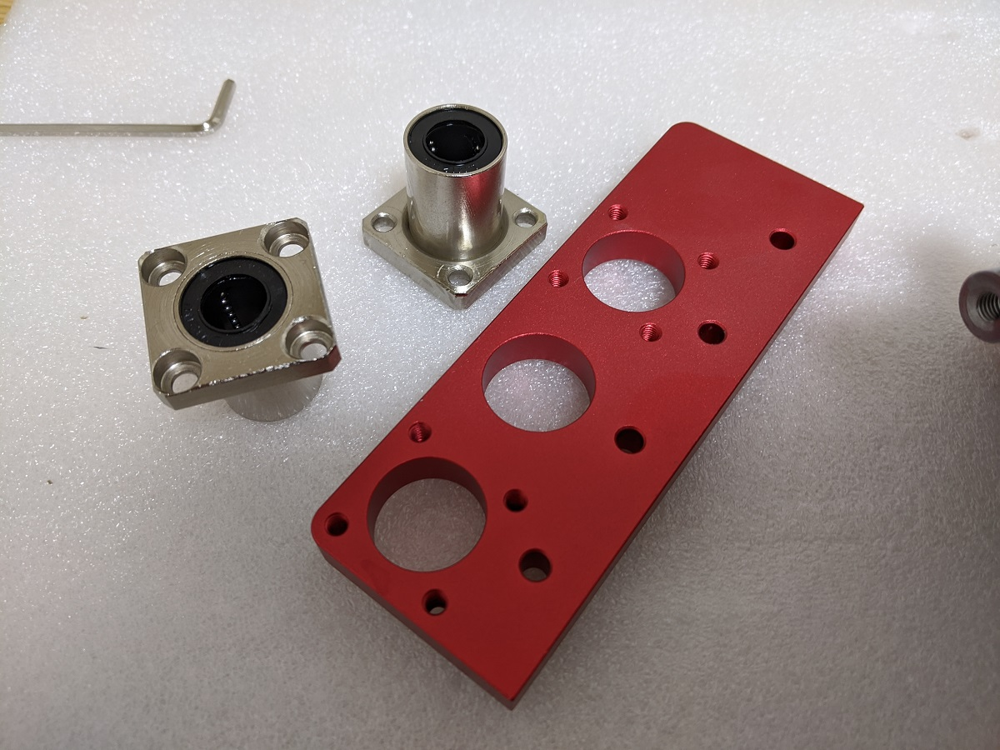
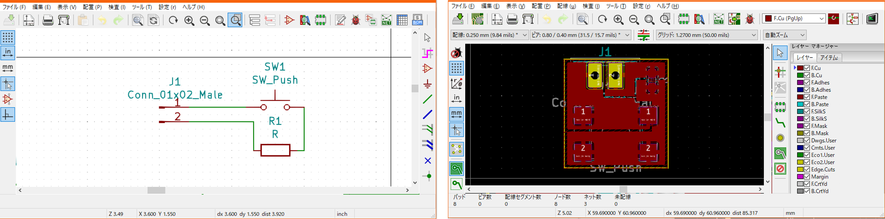
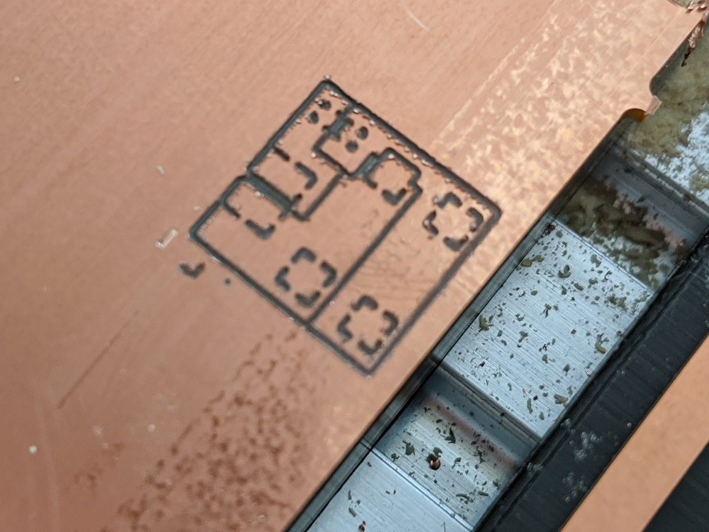
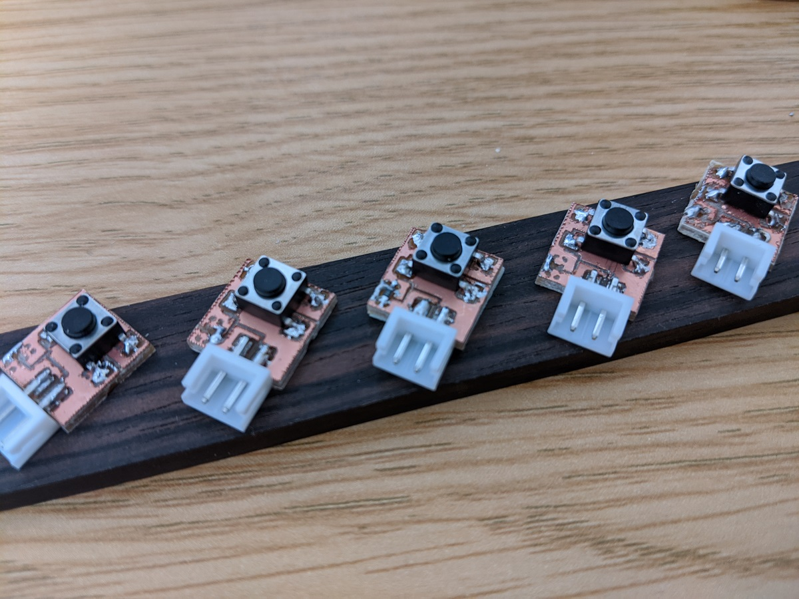
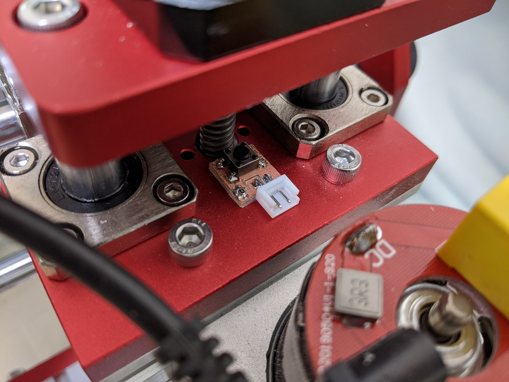

はじめに
Aliexpressでcnc1419を買いました。 買ってそのまま動くには動くんですが、RolandのModelaシリーズのぬるま湯に慣れた自分にはなかなか不親切に感じます。 特に、リミットスイッチがないのは致命的で、ワークスペースが狭いのとあいまって端にぶつけてしまうことが多々あります。 また、地味に機械原点復帰ができないのも不便なのでリミットスイッチを作ってみることにしました。 幸運にも、付属していた制御ボードであるGrbl v0.9にはリミットスイッチを指すコネクタがXYZ3軸分用意されていたので、 ただスイッチを取り付ける基板と配線だけ用意すればよいはずです。
設計
取り付け対象のCNCフライスのワークスペースが比較的狭いことを踏まえて、とにかく小型に設計することを目指します。 また、各軸のリミットスイッチを共通設計にできることもめざしました。
まず、各軸の取り付け部をよくよく眺めて、共通していそうな構造を探しました。 各軸の直動軸受けに同じフランジ付きリニアブッシュが使われていたので、 このフランジの横にリミットスイッチを取り付けることにします。 フランジ付きリニアブッシュはTHKのLMK12UUなんかと形状互換1の部品で、フランジ厚みが6mmです。 よって、無負荷時の厚みが6mmを以上、押し込んだ際の厚みが6mm以下になるように設計すれば、 フランジの厚みでスイッチが必要以上に押し込まれることを防ぐことができそうです。

さて、リミットスイッチといえば、フォトインタラプタやマイクロスイッチを使っている製品をよく見かけます。 一方で、例えば一般的マイクロスイッチであるD2Fなどは足も含めた背の高さが6mm以上であることから、 今回の設計では使うことができません。 そこで、比較的背の高さを抑えられる表面実装タイプのタクトスイッチを採用し、 コネクタも邪道に縦型のEHコネクタを寝かせて利用することにしました。
製造
大体の方針が決まったので製造にチャレンジです。 回路的にはスイッチ両端をとりあえずコネクタに出して、一方をプルアップできるようにしておきます。 基板に載せるのは、タクトスイッチ、コネクタ、プルアップ抵抗だけで、すべて極性がないので、 回路を引くときには深く考えずケーブルを作る際に辻褄を合わせる方針にしました。
とりあえず起こしてみたパターンがこれで、

切削してみた様子がこれです。

パターン切削は半月彫刻カッタで、外周切削は直径2mmのエンドミルで行いました。 どちらもCNCフライスに付属してきた怪しいやつですが、一応形を作ることはできているようです。
実装して、取付。 各軸両端にスイッチをつけて、どちらか一方が押されたらHWリミットが発火されるようにしたいので、 スイッチを並列に接続しています。 接続は適当に動くようにあてずっぽうでつないでます（どうせ50%で動くし・・・）。
 
終わりに
とりあえずリミットスイッチをつけることができました。 別途ホーミング（初期位置リセット）の設定をしてあげたので、機械原点復旧もできるようにはなりました。 ただし、ただのタクトスイッチなのであんまり再現性が高くありません（σ0.1 mmでぐらいずれる）。 厳密に機械原点出したい場合には導通センサとかで原点を調整する必要があるかもしれませんが、 とりあえず実用上困ってないのでこのままにしています。
-
フランジ形状とか軸内径は一緒なんですが、どうにもフランジとリニアブッシュ部品が別パーツに見えます。多分適当に切削したフランジにリニアブッシュを圧入したんじゃないかなぁ・・・ ↩︎